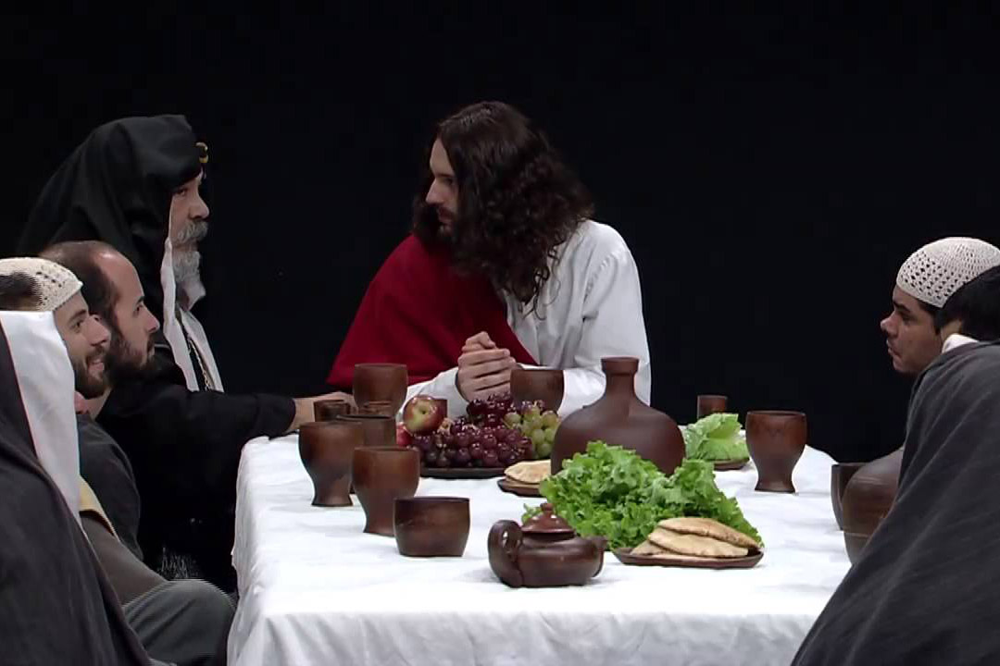

Leitura Orante
Leituras do Dia
Sexta - feira 30ª do Tempo Comum Pela União dos Cristãos
(Verde -Ofício do dia )
30 de outubro de 2020
Leitura Orante do Evangelho
Ouça o áudio da oração e reflexão do padre Francisco das Chagas


Oração do dia
Deus eterno e todo-poderoso, que reunis o que está disperso e conversais o que está unido, velai sobre o rebanho do vosso Filho. Que a integridade da fee e os laços da caridade unam os que foram consagrados por um só batismo. Por nosso Senhor Jesus Cristo, vosso Filho, na unidade do Espírito Santo.
Leitura: Fl 1,1-11
1 Paulo e Timóteo, servos de Cristo Jesus, a todos os santos em Cristo Jesus que estão em Filipos, com os seus bispos e diáconos: 2graça e paz a vós da parte de Deus nosso Pai e do Senhor Jesus Cristo. 3 Dou graças ao meu Deus todas as vezes que me lembro de vós. 4 Sempre, em todas as minhas orações, rezo por vós, com alegria, 5por causa da vossa comunhão conosco na divulgação do Evangelho, desde o primeiro dia até agora. 6 Tenho a certeza de que aquele que começou em vós uma boa obra há de levá-la à perfeição até o dia de Cristo Jesus. 7É justo que eu pense assim a respeito de vós todos, pois a todos trago no coração, porque, tanto na minha prisão como na defesa e confirmação do Evangelho, participais na graça que me foi dada. 8 Deus é testemunha de que tenho saudade de todos vós, com a ternura de Cristo Jesus. 9 E isto eu peço a Deus: que o vosso amor cresça sempre mais, em todo o conhecimento e experiência, 10para discernirdes o que é o melhor. E assim ficareis puros e sem defeito para o dia de Cristo, 11 cheios do fruto da justiça que nos vem por Jesus Cristo, para a glória e o louvor de Deus– Palavra do Senhor.
Salmo Responsorial: 110(111)
Grandiosas são as obras do Senhor!
Eu agradeço a Deus de todo o coração junto com todos os seus justos reunidos! Que grandiosas são as obras do Senhor, elas merecem todo o amor e admiração!
Grandiosas são as obras do Senhor!
Que beleza e esplendor são os seus feitos! Sua justiça permanece eternamente! O Senhor bom e clemente nos deixou a lembrança de suas grandes maravilhas.
Grandiosas são as obras do Senhor!
Ele dá o alimento aos que o temem e jamais esquecerá sua Aliança. Ao seu povo manifesta seu poder, dando a ele a herança das nações.
Grandiosas são as obras do Senhor!Evangelho: Lucas 14,1-6
1 Aconteceu que, num dia de sábado, Jesus foi comer na casa de um dos chefes dos fariseus. E eles o observavam. 2 Diante de Jesus, havia um hidrópico. 3 Tomando a palavra, Jesus falou aos mestres da Lei e aos fariseus: “A Lei permite curar em dia de sábado ou não?” 4 Mas eles ficaram em silêncio. Então Jesus tomou o homem pela mão, curou-o e despediu-o. 5Depois lhes disse: “Se algum de vós tem um filho ou um boi que caiu num poço, não o tira logo, mesmo em dia de sábado?” 6 E eles não foram capazes de responder a isso – Palavra da salvação.
Leituras do mês
TAGS
missao Amazonia evengel covid-19 indigenas novica papa francisco
Destaques
Província Stella Matutina
Rua São Benedito, 2146 - Santo Amaro - São Paulo - SP |
Tel. (11)
5547-7222


Província Spiritus Divinae Sapientiae
Rua Arnaldo Janssen, 320 - Cara-Cara - Ponta Grossa - PR |
Tel. (42) 3326 4091